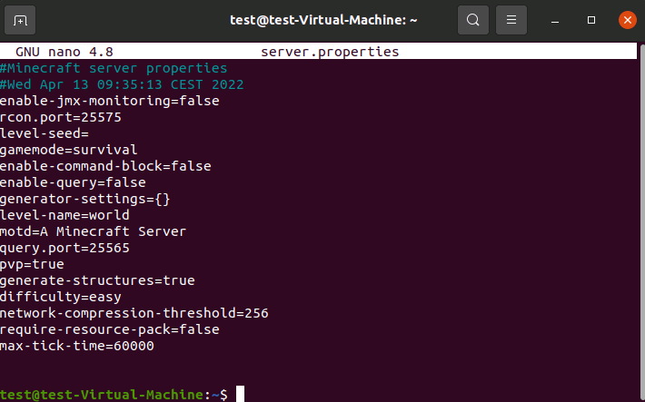

Schritt 1: Instalieren zusätzlicher Softwarekomponenten
Verbnden Sie sich mit Ihrem Linux-Server, indem Sie eine Remote-Desktop-Verbindung herstellen oder eine SSH-Verbindung mit PuTTy herstellen.
apt update
#wget Installieren
apt install wget
#OpenJDK Java runtime environment installieren
apt install openjdk-17-jre-headless
#Überpüfen ob die Installation erfolgreich war
java - version
Schritt 2: Minecraft Server Port aktivieren
Nachdem Sie die grundlegenden Komponenten für Ihren Minecraft-Server auf Linux installiert haben, besteht der nächste Schritt darin, den TCP-Port 25565 zu aktivieren. Standardmäßig verwendet die Serveranwendung diesen Port zur Kommunikation mit Clients, daher ist eine entsprechende Firewall-Regel unerlässlich. Verwenden Sie den folgenden Befehl, um die neue Regel hinzuzufügen:
ufw allow 25565
Schritt 3: Installieren der Minecraft-Serveranwendung (Java-Edition)
Jetzt können Sie die Server-Software des Sandbox-Spiels herunterladen und installieren. Für die beste Kompatibilität verwenden Sie die Java-Edition, und es ist ebenso wichtig, dass Sie eine aktuelle Version dieser Variante verwenden.
#Erstelle für jeden Minecraft-Server einen Ordner
mkdir minecraft-server1
#Download des Minecraft-Server
wget https://launcher.mojang.com/v1/objects/c8f83c5655308435b3dcf03c06d9fe8740a77469/server.jar
Schritt 4: Ausführen der Serveranwendung zum ersten Mal
Starten Sie den Minecraft-Server mit folgender Eingabe:
java -Xms1G -Xmx2G -jar server.jar nogui
Minecraft: Java Edition Server (hier Version 1.20.4) wird anschließend ohne grafische Benutzeroberfläche ("nogui") geladen. Für die Ausführung wird 1 Gigabyte als "Start"-Speicher gewährt ("Xms1G") - der maximale Speicherverbrauch ist auf 2 Gigabyte begrenzt ("Xmx2G"). Natürlich können Sie diese Werte individuell anpassen.
Wenn Sie den Befehl zum ersten Mal ausführen, werden Sie am Ende des Ladevorgangs die folgenden beiden Fehlermeldungen erhalten:
Schritt 5: Konfigurieren des Servers
Nachdem Sie der Lizenzvereinbarung zugestimmt haben, können Sie sich der Konfigurationsdatei server.properties zuwenden. Diese wurde beim ersten Start der Serveranwendung ebenfalls im aktuellen Verzeichnis erstellt. Öffnen Sie die Datei mit dem Texteditor nano:
nano server.properties

Schritt 6: Starten des Minecraft-Servers
Nachdem Sie den EULA-Bedingungen zugestimmt und Ihre individuelle Serverkonfiguration gespeichert haben, können Sie nun den bereits in Schritt 4 verwendeten Befehl zum Starten des Minecraft-Servers ein weiteres Mal in das Linux-Terminal eingeben:
java -Xms1G -Xmx2G -jar server.jar nogui
Schritt 7: Verbinden zum Minecraft-Server
Ihr Server läuft und Sie können sich nun jederzeit mit der generierten Spielwelt verbinden. Gehen Sie dazu wie folgt vor:
- Starten Sie den Minecraft-Client (Java Edition).
- Wählen Sie "Multiplayer".
- Klicken Sie auf "Direktverbindung".
- Geben Sie die IP-Adresse Ihres Minecraft-Servers ein.
Wenn Sie fertig sind, klicken Sie auf "Server beitreten".
Ich hoffe, das hilft Ihnen weiter! Passen Sie die Texte und Bildbeschreibungen nach Bedarf an.